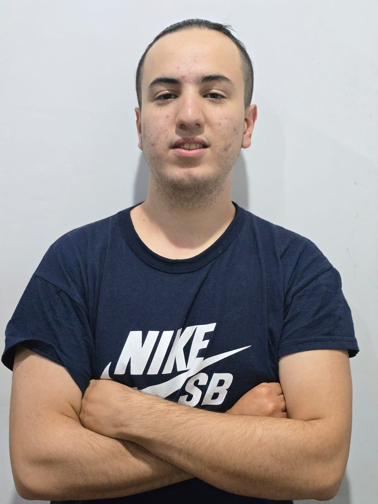

Acerca de Mí

Hola, ¿qué tal? Me llamo Sebas, tengo 19 años y vivo en Llavallol, Buenos Aires, Argentina. Comencé a estudiar programación en cuarto año del secundario (2020), ya que en la materia Informática vimos los aspectos básicos de Ansi C. Eso me llevó a investigar más sobre el tema, y realicé el curso gratuito de C++ de Programación ATS en Youtube, y su gran frase: "Si lo puedes imaginar, lo puedes programar". Sin duda, mi gran ídolo, que en paz descanse.
Luego en el verano antes de comenzar el último año escolar (2022), decidí aprender Python. Y fue sin duda el destino, ya que de allí comenzó mi viaje. Empecé a hacer cursos, prácticas, talleres, y sin duda trato de mantenerme al día y siempre motivado. Como diría Richard Branson: "No se aprende a caminar siguiendo las reglas. Se aprende caminando y cayendo". Me considero un autodidacta!
A lo largo de estos años he realizado proyectos y aplicaciones de manera independiente, lo pueden encontrar la mayoría en mi GitHub. Actualmente estoy cursando el segundo año de la carrera.
Soy también cicloviajero con muchos viajes encima y ambiciones para el futuro. Actualmente me encuentro haciendo un curso de mecánica de bicicleta en la Universidad Nacional de Lanús (UNLA).
Lenguajes
- Python
- SQL
- MongoDB
- HTML
- CSS
- C++/C
- Arduino
- JavaScript (básico)
Además, cuento con habilidades como manejo de versiones con GitHub, paquete Office (Excel, PowerPoint y Word), Jupyter Lab, Google Colab, diferentes IDE (como Visual Studio Code), diagramas de flujo y pseudocódigo.